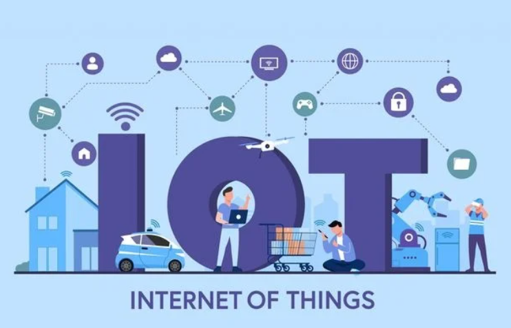

TENDENCIAS TECNOLÓGICAS: INTERNET DE LAS COSAS
SESIÓN 21 (28-05-2024)

El término "IoT" (Internet of Things) o Internet de las Cosas se refiere a la interconexión
de dispositivos y objetos cotidianos a través de internet, permitiéndoles enviar y recibir
datos. Este concepto abarca una amplia gama de dispositivos que van más allá de los
tradicionales dispositivos de comunicación entre personas. Los objetos conectados incluyen desde
electrodomésticos como refrigeradores y termostatos inteligentes, hasta vehículos como
automóviles conectados, así como sensores industriales y dispositivos médicos.
Estos dispositivos están equipados con sensores, software y otras tecnologías que les permiten
recolectar y transmitir datos. La conexión a internet les posibilita intercambiar datos no solo
entre ellos mismos, sino también con otros sistemas y dispositivos, lo que facilita la
automatización, el monitoreo remoto, y la optimización de procesos en diversos sectores como la
industria, la salud, el transporte, y el hogar inteligente, entre otros.
El concepto de IoT representa una evolución significativa en la forma en que interactuamos con
el entorno y los objetos que nos rodean, proporcionando nuevas oportunidades para la eficiencia,
la personalización de servicios, y la creación de nuevas experiencias y modelos de negocio.
SESIÓN 22 (22-05-2024)
En un hogar inteligente, los termostatos inteligentes como el Nest son dispositivos que ajustan automáticamente la temperatura del ambiente según las preferencias y patrones de uso del usuario. Utilizan sensores para detectar la temperatura y la presencia en la habitación, y pueden aprender de los hábitos de los usuarios para optimizar el consumo de energía. La iluminación inteligente consiste en luces que pueden ser controladas desde una aplicación móvil o dispositivo inteligente. Esto permite a los usuarios encender, apagar, regular la intensidad de la luz y en algunos casos cambiar el color de las luces, todo desde la comodidad de su teléfono móvil. Los electrodomésticos conectados en un hogar inteligente incluyen refrigeradores, lavadoras y otros dispositivos que están equipados con conectividad a internet. Esto permite a los usuarios monitorear el estado de estos electrodomésticos, recibir alertas sobre eventos importantes (como puertas abiertas o ciclos de lavado terminados), y en algunos casos controlar remotamente funciones como la temperatura del refrigerador o iniciar/programar ciclos de lavado desde una aplicación.